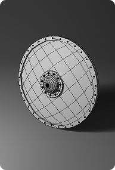

Klara
About me
Hi! My name is Klara and I am currently studying 3D animation. I used to study graphic design, but I decided to try something new. I am into all kinds of visual story telling (animation, movies, photography, cinematography, game design, graphic design and arts in general). I am also a huge fan of reading, traveling and music. I made many projects, like brand identities, smaller animations, 3D models and 3d printing but also laser cutting my prints or painting big canvas like big mural for a small city in Czech Republic or even designing and painting a giant octopus in a pool.
Graphic Design

mockups
brand identity
logos
posters
I studied Graphic Design for four years before going for 3D modeling. I learned about layout, typography, how colors go together and how to create whole brand identities starting with logo to the mockups. I have worked on multiple project and designed many posters, but even magazines, books or pool design.
School Exhibition
Every year my old school is organising an exhibition at the end of the year to show the students work. They display all kinds of projects. Not just graphic design, but also fashion designs and interior design. But each year there is a theme. That year the theme was "GAME". There is always a competition for students to design the poster. My design ended up winning.
Company Poster
For my final year studying graphic design I made a brand identity for a small company in Brno in Czech Republic. They grow mushrooms on coffee waste and then sell them to restaurants. I made the posters in 3D in blender so you could also print these mushrooms as a marketing products. I made 3 posters, banners, logo, mockups and web design.

Poster for Magazine
Recenty I started working on a personal project which will be a magazine about my life here in Dublin. I will make it for myself and my friends so we could look at it in a few years and see all the photos and read about the things we did in the first year and remember these fun times. I am still working on it, but I am planing to make a magazine for each year.
3D Modeling

some objects from my scenes up close
For a while I was really into blender, so when I found a college that includes 3d modeling I had to try it. Before I used to have some small fun projects with my brother and father, then I moved to graphic design combined with 3D. Now however I am learning more about 3D animation and modeling in Maya instead of blender.
This project was a small competition with my brother and father because all of us were learning blender. We had a theme "pub" and each of us made different kinds of pub. It was more of a learning exercise.
This also happened so I could try something new. In this one I focused on animation, and these are just screenshots from it. It was a challenging project but I learned a lot and was proud of the outcome.
Here I was trying to make some teaser screenshots because I had an idea for a game that would include a big cathedral and would be focused on gothic era. Unfortunately I never had time to finish this one.
Traditional Work
In my previous school I had the opportunity to try so many traditional techniques besides the graphic design. We tried drawing, painting, pastels, dry needle, etching, litography, linocut, woodcut, screen printing and much more. We also had life drawing every week. I was lucky to try so many things so now I have a lot of experience.